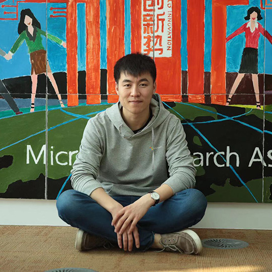

Dong Xiaoning
PhD CandidateRm 301, Building C Email: dongxn02 at gmail dot com |
 |
![[DBLP]](./pic/dblp.png)
![[GitHub]](./pic/github.jpg)
Biography [CV]
I am currently a forth year Ph.D. student in the Department of Computer Science and Engineering, The Chinese University of Hong Kong (CUHK), where I am fortunate to be co-advised by Prof. Pheng-Ann Heng and Prof. Chi-Wing Fu. Before that, I received the B. Eng. degree from the School of Mechano-Electronic Engineering, Xidian University. I worked with Prof. Kai Xie for undergraduate research.
My research has been focused on two broad themes: the interdisciplinary area of developing AI algorithms for real-world medical imaging applications; and the fundamental problems regarding to low-data regime issues, such as few-shot learning, semi-supervised learning and unsupervised learning.
I spent the summer of 2018 at Tencent AI lab, working with Jia Xu on developing models for few-shot classification.
Selected Prizes & Awards
National Scholarship(1%),
CUMCM
CCF OUA